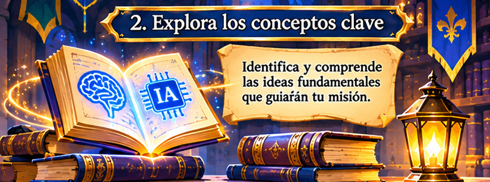
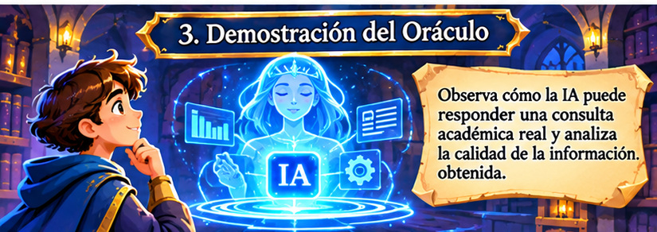
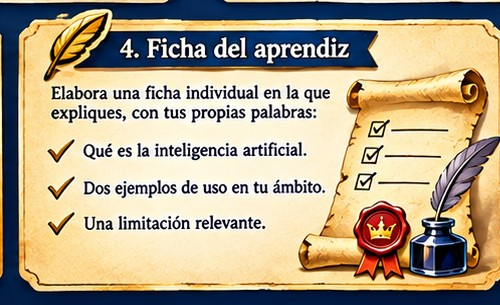

Aprendiz, la Gran Biblioteca ha perdido parte de sus conocimientos. El Consejo Real te encomienda descubrir qué es la inteligencia artificial, reconocer dónde se utiliza y comprender por qué sus respuestas deben analizarse con criterio.
✦ Mensaje del Consejo Real
En esta primera misión conocerás al Oráculo Real, una representación de la inteligencia artificial. Recorrerás los saberes fundamentales, resolverás un desafío de clasificación y observarás una consulta académica. Al final, registrarás tus descubrimientos en la ficha del aprendiz.
Propósito: identificar qué es la inteligencia artificial, reconocer aplicaciones cotidianas y explicar al menos una de sus limitaciones.
1
Explora los conceptos clave
Conoce los fundamentos de la inteligencia artificial a través de tres ejes principales. Selecciona cada pergamino para ampliar la explicación.

LOS SABERES FUNDAMENTALES DEL ORÁCULO
¿Qué es?
Es un conjunto de tecnologías que permite a los sistemas realizar tareas que suelen requerir capacidades humanas, como reconocer patrones, interpretar lenguaje o generar contenido.
La IA no piensa ni comprende necesariamente como una persona. Los sistemas procesan datos y utilizan modelos para producir resultados según patrones aprendidos o instrucciones recibidas.
¿Dónde se utiliza?
Está presente en asistentes virtuales, filtros de correo, recomendaciones de contenido, traducción automática y herramientas que generan textos o imágenes.
También puede apoyar actividades educativas, científicas y profesionales. Su utilidad depende del propósito, de la calidad de los datos y de la supervisión humana.
¿Qué limitaciones tiene?
Puede producir errores, información desactualizada o resultados sesgados. Por eso, sus respuestas deben revisarse antes de utilizarlas.
Una respuesta convincente no garantiza que sea verdadera. Es importante contrastar datos, consultar fuentes confiables y evitar compartir información personal o sensible.
2
Desafío: ¿inteligencia artificial o tecnología convencional?
Pon a prueba tu comprensión. Analiza ocho situaciones y clasifícalas en dos categorías: uso de inteligencia artificial o tecnología convencional.
Instrucción: lee cada situación y selecciona una categoría. Recibirás retroalimentación inmediata para revisar tu razonamiento.
1Un asistente virtual interpreta una pregunta hablada y genera una respuesta.
2Una calculadora básica suma dos números cuando el usuario introduce la operación.
3Una plataforma recomienda películas según el historial y las preferencias del usuario.
4Un reloj programado hace sonar una alarma todos los días a las 6:30 a. m.
5Una herramienta genera una imagen nueva a partir de una descripción escrita por el usuario.
6Un semáforo cambia de luz siguiendo siempre el mismo ciclo de tiempo programado.
7Un filtro de correo analiza patrones para identificar mensajes que podrían ser no deseados.
8Una presentación avanza a la diapositiva siguiente cuando el usuario pulsa una tecla.
Respuestas completadas: 0 de 8 · Aciertos: 0
Completa las ocho situaciones para revisar tu resultado.
3
Demostración guiada: consulta al Oráculo Real
Observa cómo una herramienta de IA puede responder una consulta académica y analiza la calidad de la información obtenida.

EL ORÁCULO REAL: UNA RESPUESTA QUE DEBE ANALIZARSE
La consulta realizada
Pregunta: ¿Qué es la inteligencia artificial y menciona dos ejemplos de cómo se utiliza en la vida cotidiana?
Respuesta ilustrativa del Oráculo
La inteligencia artificial es una tecnología que permite a los sistemas realizar tareas como reconocer patrones, interpretar lenguaje y generar contenido. Algunos ejemplos cotidianos son los asistentes virtuales que responden preguntas y las plataformas que recomiendan películas o música según las preferencias de cada persona.
Esta respuesta es un ejemplo didáctico elaborado para analizar cómo podría responder una herramienta de IA.
Examina la respuesta
Una respuesta puede ser clara y pertinente, pero eso no significa que toda su información sea completa o correcta.
Pertinencia: responde directamente a lo que se preguntó.
Claridad: utiliza una explicación comprensible.
Verificación: los conceptos y ejemplos deben contrastarse con fuentes confiables.
Limitación: no explica por sí sola todos los alcances ni riesgos de la IA.
Conclusión: utiliza la respuesta como punto de partida y verifica la información antes de incorporarla a un trabajo.
4
Ficha del aprendiz
Registra tus descubrimientos con tus propias palabras. Completa los campos y utiliza el botón para imprimir o guardar tu ficha como PDF.

REGISTRA TUS HALLAZGOS Y CONSERVA TU EVIDENCIA
La ficha se conserva en este navegador mientras no borres sus datos.
5
Cierre de la misión
Has completado el primer recorrido para recuperar los saberes del reino. Entrega tu ficha al docente para recibir retroalimentación y, cuando valide tu evidencia, obtener la insignia correspondiente.
Insignia: Aprendiz del Reino
Se concede al identificar conceptos básicos de IA, reconocer aplicaciones cotidianas y explicar al menos una limitación.
Fragmento recuperado: CONOCIMIENTO.
Este fragmento permitirá avanzar hacia la segunda misión: «El lenguaje de los sabios».
Antes de continuar: comprueba que has completado el desafío y que tu ficha contiene una explicación propia, dos ejemplos y una limitación de la IA.